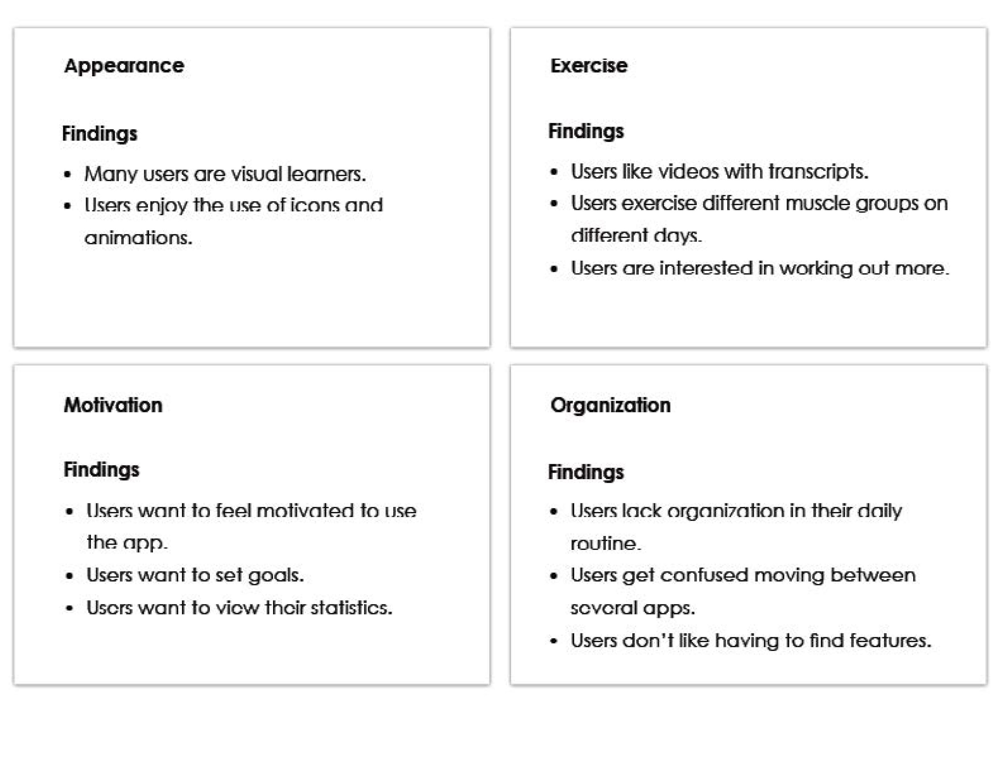
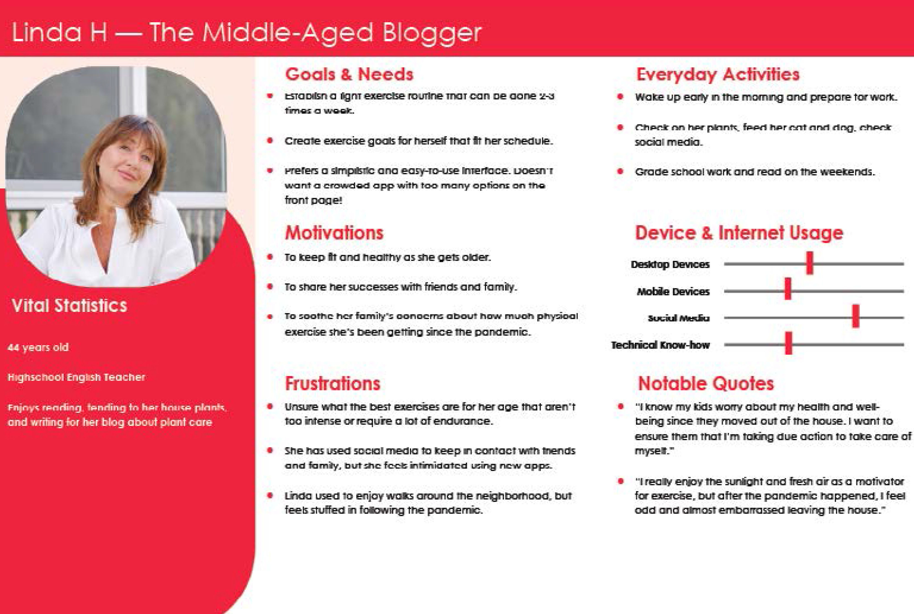
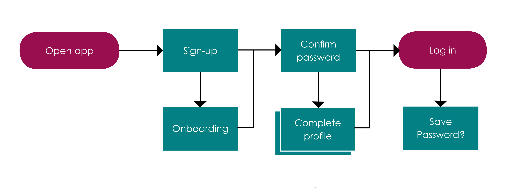

Olive
Design Thinking
Devising the Problem Statement
Following my review of the provided design brief, I brainstormed some of the primary problems I would need to address. I devised a problem statement, as well as a solution.
Problem Statement
Our users will need a way to organize and maintain their personal health goals because the stressors of work and home life has made it difficult for our users to stay on top of their health. We will know this to be true when we see users are reporting a greater sense of balance through the use of our app, and are updating their health goals with data.
Potential Solution
Because there are so many health & wellness apps already on the market, Olive will need to be a fresh take on features that track diet, exercise, medical data, and mental wellness. Customization that allows the app to respond to specific user needs will aid in this pursuit. This can be done by allowing users to choose options that fit their needs best, while hiding options that no longer apply (for example, a user that marks themselves as vegetarian would want recipes containing meat to be hidden from their page.)
Competitor Analysis
MyFitnessPal & Headspace
Competitor Analysis Now that I knew my problem statement, I searched for other apps that may have encountered the same problem. When dealing with a heavily saturated market such as health & wellness applications, I knew competitor analysis was key to differentiating myself. I analyzed two of the most reviewed health apps, including Headspace and MyFitnessPal.
Observe
Surveys
My research into my competitors made me realize there weren’t any prominant apps with a focus on water intake. I decided to create a survey investigating if there was a need for this type of app.
Goals
57% of participants enjoy drinking water plain.
All of participants drink plain water daily.
All participants would want notifications reminding them to drink more water while 6 participant wanted the ability to set goals for yourself.
Conclusion
Interviews
After finding there was little interest in an app for water-intake, I wanted to gather more information into the wants and needs of my users. I conducted three remote interviews with the intent of exploring general expectations of Health & Wellness apps, and what features my target audience may find lacking in the health apps they currently use.
Mary
2/8/2020
3:15pm
Recorded
Riley
2/9/2020
9:00am
Recorded
Shafi
2/9/2020
10:00am
Not Recorded
User Research Analysis
After collecting notes from each interview, I created an affinity map for each of my interviewees and organized the data based on Needs, Frustrations, Behaviors & Atttitudes, and interesting Quotes. I then further divided this data into four essential categories: Appearance, Exercise, Motivation, and Organization.
POV
Personas
Using the information I gathered from the interviews and user analysis, I created two personas exploring their potential goals, motivations, and frustrations. So far, the research I’ve done has been aimed toward understand the goals of my userbase.
Userflows
After determining the major needs and goals of my users, I decided I would build an app for organizing and reaching personal exercise goals. To start, I created some userflows that would help me organize my approach.
Ideate
Wireframes
Using my userflows, I developed some low-fidelity wireframes. I then created mid-fidelity and high-fidelity wireframes.
Testing
Prototyping & Usability
The next step was to test my product for any major design errors. I created an active prototype and approached six interviewees for user testing. Each interviewee was given three taswwks to perform.
Rainbow Spreadsheet
The collected data was organized into a Rainbow Spreadsheet, showing four categories of interest: Errors, Observations, Negative Feedback, and Positive Feedback.
Final Design
Final Designs
A new set of iterations was created based off of these findings. An updated prototype was made, and a final collaboration from my fellow UX design students was held to determine any final changes or comments. Additional changes were made to comply with WCAG 2.0 accessibility guidelines.
Old Wireframes
Revised Wireframes
Final Thoughts
What's next?
While the journal section has come a long way, I feel there are still ways to improve it. Ideally, I will want the journals to allow people to share their progress to friends or other app users. However, I worry that the current design may be confusing to first-time users, and the feature may come off as more work than it is rewarding. I think this section would benefit from more interviews, where I can get a better idea of how users may interact with the feature and how they would like to share their progress with like-minded individuals.
Reflection
My efforts in creating Olive has taught me that any project I work on will always have room to grow. Work is never truly done, and there is always temptation to continue exploring new heights and try new solutions. However, a hard lesson I’ve learned this year is to let go of perfection in order to finally cross the finish line. The work I put into this project was deeply enriching in my understanding of all that goes into UX design. I’m repeatedly amazed by how much careful design and planning goes into the products and commodities we often take for granted. Work like this reminds me how capable humanity can be when we work systematically to create a more welcoming and accessible world for everyone.